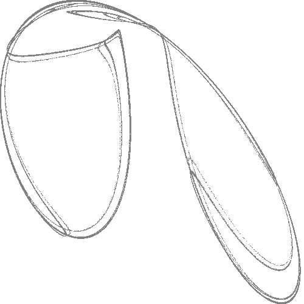

I'm gonna use this page to dump random crap that I like (i.e.
welcome to my weblog)

^ randomly generated quadratic map with lyapunov exponent ≥ 0,
found and visualised using
this
procedure.
My server is continuously producing these images so you
may wish to refresh the page periodically.